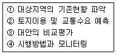
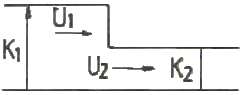
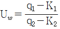
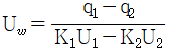
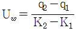
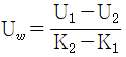
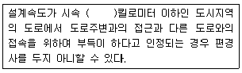
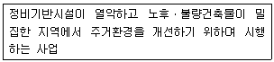
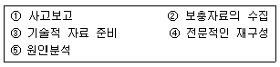

교통기사 (2008-03-02 기출문제)
1과목: 교통계획
1. 교통조사시 조사대상지역 밖에 출발지 또는 목적지를 가진 통행을 조사하는 방법은?
- 폐쇄선 조사
- 스크린라인 조사
- 속도 조사
- 차량번호판
(정답률: 알수없음)

2. 출발지, 목적지별 교통량 조사(Origin and Destination Survey) 방법에 해당하지 않는 사항은?
- 터미널조사
- 노측면접조사
- 스크린라인조사
- 가구방문조사
(정답률: 30%)
3. 통행배분모형 중 중력모형의 일반적인 특징은?
- 완전한 기종점(O-D)표가 필요하다.
- 장기적인 예측에 유리하다.
- 기종점 교통량은 경제활동의 거리에 비례한다.
- 타방법에 비해 계산이 용이하다.
(정답률: 알수없음)
4. 표준적 교통계획 수립과정의 합당한 순서는?

- ①-②-③-④
- ④-①-②-③
- ④-①-③-②
- ①-②-④-③
(정답률: 알수없음)
5. 경로 선택에서 어떤 경로를 이용하든지 경로통행시간이 동일하게 되는 상태를 무엇이라 하는가?
- 수요-공급의 평형
- 교통체계 전체의 평형
- 통행로 평형
- 이용자 평형
(정답률: 알수없음)
6. 통행배정모형 중 확률모형에 대한 설명으로 옳은 것은?
- 교통량이 산정된 확률을 토대로 배분되기 때문에 배정과정이 매우 단순하다.
- 대개의 경우 초기 설정된 통행 비용을 토대로 경로선택확률을 산정하기 때문에 도로용량에 대한 고려가 충분하다.
- 대안적 경로를 선정하기 위한 객관적 척도나 알고리즘이 우수하다.
- 확률모형에는 확률적 다이나믹 모델, 이용자 평형 다이나믹 모델 등이 있다.
(정답률: 알수없음)
7. 도시가로망 계획시 도로의 기능별 체계상 접속순서가 가장 올바른 것은?
- 국지도로-집산도로-보조간선도로-주간선도로-도시고속도로
- 집산도로-국지도로-보조간선도로-주간선도로-도시고속도로
- 집산도로-국지도로-주간선도로-보조간선도로-도시고속도로
- 국지도로-보조간선도로-주간선도로-집산도로-도시고속도로
(정답률: 알수없음)
8. 다음 중 가구통행실태조사의 일반적인 항목으로 적합하지 않은 것은?
- 출발시간
- 통행목적
- 환승여부
- 통행경로
(정답률: 알수없음)
9. 시간가치는 교통시설 투자의 타당성 분석에서 매우 중요하다. 다음 중 시간가치를 산출할 때 사용되는 것은?
- 교통비용
- 개인임금
- 기회비용
- 여가비용
(정답률: 알수없음)
10. 다음 중 공영버스회사에 대한 설명으로 바르지 못한 것은?
- 공영버스회사의 운행비용은 민영회사보다 적게 든다.
- 공영버스회사는 공공성에 입각하여 버스를 운행하므로 민영회사보다 다양한 서비스 여건이 형성될 수 있다.
- 단일의 공영회사가 많은 소규모 민영회사보다 훨씬 더 효과적으로 도시전역에 걸쳐 서비스를 공급해 줄 수 있다.
- 공영회사에 대한 정치적, 행정적 간섭이 있을 수 있다.
(정답률: 73%)
11. 다음의 경전철(LRT)에 대한 설면 중 옳지 않은 것은?
- 승객승차대가 낮아 승ㆍ하차시 매우 편리하다.
- 도로상을 운행 할 수는 없다.
- 시간당 수송량은 지하철보다 작다.
- 지하철의 전환을 염두에 두고 건설되는 예비지하철시스템도 일종의 경전철이라 볼 수 있다.
(정답률: 84%)
12. 교통수요관리 기법 중 교통수단의 전환을 유도하는 정책과 가장 관계가 먼 것은?
- 버스전용차로제
- 자전거 전용도로 확보
- 교통유발부담금 제도 강화
- 교통방송을 통한 통행노선의 전환
(정답률: 알수없음)
13. 교통계획의 공간적범위에 따른 분류에 속하지 않는 것은?
- 지역교통계획
- 간선도로계획
- 도시교통계획
- 지구교통계획
(정답률: 알수없음)
14. 통행발생모형에서 일반적으로 다중회귀분석모형이 적용되고 있는데 이에 대한 설명으로 옳지 않는 것은?
- 모형의 적합도를 판단할 수 있는 결정계수(R2)가 클수록 ㄷ즉 1에 가까울수록 좋은 회귀모형이라 할 수 있다.
- 다중회귀모형에서 모든 독립변수들은 서로 독립적이고 각 변수간의 상관관계는 높을수록 좋다.
- 이 모형식의 종속변수는 통행목적별 통행유출과 통행유입량이다.
- 통행유입을 예측하는데 사용되는 설명변수는 산업별 고용자수, 상품판매액 등이 있다.
(정답률: 75%)
15. 도로 설계의 기본이 되는 장래 교통량으로, 설계 대상 구간을 지날 것으로 예상되는 1시간 교통량으로 주어지는 연평균일교통량(AADT)에 설계시간 계수(K)를 곱하여 산출하는 것은?
- 계획 교통량
- 설계시간 교통량
- 최대 서비스 교통량
- 1시간 환산 교통량
(정답률: 90%)
16. 교차로안에 교통의 흐름을 유도하고 보행자횡단의 안전을 도모하기 위해 설치되는 시설은?
- 중앙분리대
- 교통섬
- Taper
- 횡단보도
(정답률: 알수없음)
17. 도시인구에 따른 최소 표본율을 표시한 것 중 틀린 것은?
- 5만 이하 : 최소표본율 5%
- 15만~30만 : 최소표본율 3%
- 30만~50만 : 최소표본율 2%
- 100만 이상 : 최소표본율 1%
(정답률: 알수없음)
18. 가정기반통행의 설명변수로 적합하지 않은 것은?
- 승용차 보유대수
- 가구 소득
- CBD로부터의 거리
- 고용인구
(정답률: 알수없음)
19. 일방향 25km 도시 철도노선의 왕복운행시간이 120분이다. 차량 편성이 10량이라면 5분 배차간격을 유지하기 위해 필요한 차량수는?
- 240량
- 120량
- 24량
- 12량
(정답률: 알수없음)
20. 다음 중 조사된 O/D표를 검증하거나 보완하기 위하여 실시하는 조사는?
- 스크린라인 조사
- 직장방문 조사
- 차량번호판 조사
- 터미널 조사
(정답률: 알수없음)
2과목: 교통공학
21. 교통량이 180(대/시)라고 한다. 한 시간내에 도착하는 자동차 대수가 poisson 분포를 따른다고 가정할 때, 1분간에 4대의 자동차가 도착할 확률은 얼마인가?
- 1.101
- 0.147
- 0.168
- 0.202
(정답률: 알수없음)
22. 다음 중 교통량 조사방법이 아닌 것은?
- 사진측량법
- 영상검지기 기계식 조사
- 주행차량이용법
- 가구방문 통행조사
(정답률: 알수없음)
23. 노선구간의 연장이 15km인 대중교통노선의 필요한 차량규모를 알아보려고 한다. 시험운행 결과 평균 운행속도가 20km/h, 배차간격이 6분으로 판단되었다면 이 노선의 필요한 차량규모는 얼마인가?
- 10대
- 15대
- 20대
- 25대
(정답률: 알수없음)
24. 도로 기하구조의 기준이 되는 속도로써 운전자의 안전을 보장해주는 최대속도가 되는 것은?
- 지점속도(spot speed)
- 임계속도(optimum speed)
- 운전속도(operating speed)
- 설계속도(desing speed)
(정답률: 알수없음)
25. 아래 그림과 같이 교통류에 Bottle neck이 형성될 경우 그에 의한 충격파의 속도는?





(정답률: 64%)
26. 다음 중 교통량(q), 교통밀도(k), 공간평균속도(v)의 관계식으로 옳은 것은?
- q=v/k
- q=k×v
- q=k/v
- v=(k×q)2
(정답률: 90%)
27. 15분 간격으로 1시간 동안 관측된 교통류율(flow rate)이 100, 150, 120, 110 이었다면 시간당 최대교통량은?
- 600
- 400
- 460
- 440
(정답률: 알수없음)
28. 두 교차로간을 주행하는 차량평균속도가 30km/h이고 옵셋 10초, 두 교차로의 황색 신호시간이 3초일 때 두 교차로간의 간격은? (단, 완전한 연속진행이 보장되는 경우)
- 58m
- 83m
- 108m
- 210m
(정답률: 알수없음)
29. 교통시설을 설계할 때 설계기준 교통량(DHV)을 Q라 하면, 이 계획 시설의 용량은 Q와 비교해서 어떠한가?
- 같게 하는 것이 경제적이다.
- 작게하는 것이 좋다.
- 크게 해야 한다.
- Q와 상관없다.
(정답률: 55%)
30. 교통표지 중에서 황색 바탕에 적색 테두리를 하고 문자와 부호는 흑색인 표지는?
- 규제표지
- 주의표지
- 지시표지
- 안내표지
(정답률: 59%)
31. 신호교차로에서 차량의 녹색신호시간 후의 황색신호시간의 길이를 산정할 때 교려되는 요소와 가장 거리가 먼 것은?
- 인지-반응시간
- 교차로 진입차량의 감속도
- 교차로 횡단길이
- 정지선의 폭
(정답률: 알수없음)
32. 신호등은 운전자 또는 보행자가 적절한 시계 내에서 계속 시인할 수 있는 위치에 설치하여야 한다. 다음 중 옳지 않은 것은?
- 차량은 정지선에 도달하기 전에 신호등을 시인할 수 있어야 하며 그 최소거리는 접근속도에 ᄄᆞ라 달라진다.
- 신호등면은 진행방향으로부터 좌우 각각 20° 범위내에 있어야 한다.
- 신호등면은 정지선으로부터 후방 10-40m 사이에 위치해야 한다.
- 교차로 건너편의 신호등이 정지선에서 20m 이상 떨어져 있는 경우 정지선 이전에 보조신호등을 반드시 설치하여야 한다.
(정답률: 알수없음)
33. 신호체계의 구성요소 중 차량출현 여부, 교통량, 속도 및 점유율 등의 교통정보를 수집하는 역할을 하는 것은?
- 관제센터
- 신호등
- 제어기
- 검지기
(정답률: 알수없음)
34. 다음 중 운전자 반응시간의 4단계 과정을 옳게 나열한 것은?
- 확인-인지-판단-반응
- 인지-판단-확인-반응
- 인지-확인-판단-반응
- 반응-인지-판단-확인
(정답률: 알수없음)
35. 교통량이 최대가 될 때의 속도를 무엇이라 하는가?
- 순간속도
- 자유속도
- 최대속도
- 임계속도
(정답률: 알수없음)
36. 신호주기가 75초인 정주신호 교차로에서 일정 시점에 정지한 차량의 수를 조사하여 차량의 정지지체를 계산하여 한다. 정지 차량의 조사간격으로 부적당한 값은?
- 16초
- 15초
- 14초
- 13초
(정답률: 60%)
37. 교통류의 흐름에서 교통량과 밀도의 역수는 각각 무엇인가?
- 통행속도, 차두시간
- 혼잡밀도, 차두시간
- 차두시간, 혼잡밀도
- 차두시간, 차두거리
(정답률: 알수없음)
38. 곡선부에서 차량이 주행을 할 때 속도, 곡선반경, 편경사, 마찰계수사이의 사이의 관계를 바르게 기술한 것은?
- 주행속도가 크면 곡선반경은 작아도 된다.
- 주행속도가 크면 편경사는 작아도 된다.
- 마찰계수가 크면 편경사는 작아도 된다.
- 마찰계수가 크면 곡선반경도 커야 된다.
(정답률: 90%)
39. 신호교차로의 용량분석시 적용되는 이상적인 조건이 아닌 것은?
- 경사가 없는 접근부
- 차로폭 3m 이상
- 교통류는 직진이며 모두 승용차로 구성
- 측방여유폭 1.5m 이상
(정답률: 알수없음)
40. 시간평균속도(Time mean speed)와 공간평균속도(Space mean speed)에 대한 설명 중 틀린 것은?
- 시간평균속도는 공간평균속도보다 크거나 같다.
- 공간평균속도는 지점속도와 그 뜻이 같다.
- 시간평균속도는 고정된 지점에서 단위 시간에 관측된 차의 평균속도이다.
- 구간내의 모든 차가 동일 속도로 운행하고 있다면 시간 평균속도와 공간평균속도는 같다.
(정답률: 알수없음)
3과목: 교통시설
41. 다음 중 정지거리 산정시 영향을 미치는 요소와 가장 관계가 먼 것은?
- 반응시간
- 도로의 곡선반경
- 설계속도
- 마찰계수
(정답률: 82%)
42. 주차효율이 0.95, 주차발생량이 1,000m2당 10대, 건물면적이 40,000m2일 때 주차발생 원단위법에 의한 주차수요는?
- 약 475대
- 약 422대
- 액 400대
- 약 380대
(정답률: 알수없음)
43. 평면곡선반경이 150m인 평면곡선부의 최소 확폭량은? (단, 설계기준차량이 대형 자동차인 경우)
- 0.25m
- 0.50m
- 0.75m
- 1.00m
(정답률: 알수없음)
44. 도로의 평면곡선설계에서 최소 평면곡선반경을 정할 때 고려하지 않아도 되는 것은?
- 설계속도
- 편경사
- 횡방향미끄럼마찰계수
- 곡선길이
(정답률: 73%)
45. 비신호 평면 교차로의 경우 좌회전 차로의 대기차량을 위한 길이 산정 기준은?
- 첨두시간 평균 2분간 도착하는 좌회전 교통량
- 첨두시간 평균 5분간 도착하는 좌회전 교통량
- 첨두시 신호 1주기당 도착하는 좌회전 차량 수
- 첨두시 신호 2주기당 도착하는 좌회전 차량 수
(정답률: 알수없음)
46. 도로와 철도가 동일 평면에서 교차하는 경우 도로의 구조로서 적합하지 않은 것은?
- 건널목의 양측에서 각각 30m 이내의 구간은 건널목 부분을 포함하여 직선으로 한다.
- 교차각은 30° 이상으로 한다.
- 철도를 횡단하여 교량을 가설하는 경우에는 철도의 확장 및 보수와 제설 등을 위한 충분한 경간 길이를 확보해야 한다.
- 건널목에서의 철도차량의 최고속도가 80km/hr일 때 가시구간의 길이는 최소 230m 이상으로 한다.
(정답률: 알수없음)
47. 다음 중 최대 편경사를 결정하는데 있어서 고려하여야 할 요소와 가장 거리가 먼 것은?
- 주행의 쾌적 및 안전
- 제동거리
- 적설, 결빙 등의 기상조건
- 저속 주행자동차의 빈도
(정답률: 알수없음)
48. 도시지역의 고속도로 및 일반도로에서 중앙분리대 설치 시 중앙분리대의 최소폭은?
- 고속도로 1.5m, 일반도로 1.0m
- 고속도로 2.0m, 일반도로 1.0m
- 고속도로 2.5m, 일반도로 2.0m
- 고속도로 3.0m, 일반도로 2.0m
(정답률: 알수없음)
49. 횡단보도는 일반적으로 육교ㆍ지하도 및 다른 횡단보도로부터 최대 몇 m이내에는 설치하여서는 안되는가?
- 100m
- 200m
- 300m
- 400m
(정답률: 알수없음)
50. 고속도로에서 우측 길어깨(갓길)의 폭원이 최대 얼마 미만일 경우 비상주차대를 설치해야 하는가?
- 1.5m
- 2.0m
- 2.5m
- 3.0m
(정답률: 알수없음)
51. 다음의 평면곡선부의 편경사에 대한 설명 중 ()안에 알맞은 것은?

- 60
- 70
- 80
- 100
(정답률: 90%)
52. 보호 길어깨의 폭은 얼마를 표준으로 하는가?
- 0.5m
- 1.0m
- 1.5m
- 2.0m
(정답률: 알수없음)
53. 오르막차로의 설치기준에 대한 설명 중 옳은 것은?
- 설계속도가 시속 40킬로미터 이하인 경우에는 오르막 차로를 설치하지 않을 수 있다.
- 오르막차로의 최대 편경사는 3%이다.
- 오르막차로를 주행차로에 변이구간으로 접속시키는 방법의 경우 시점부 변이구간은 설계속도에 따라 변이율을 1/10~1/20 사이로 한다.
- 오르막차로를 주행차로에 변이구간으로 접속시키는 방법의 경우 종점부 변이구간은 설계속도에 따라 변이율을 1/15~1/25 사이로 한다.
(정답률: 80%)
54. 평면교차로 설계의 기본 원칙으로 옳지 않은 것은?
- 교차각은 직각에 가깝게 되도록 한다.
- 엇갈림 교차, 굴절교차 등의 변형교차는 피해야 한다.
- 종단곡선의 정상부나 맨 아랫부분에 교차로를 설치하도록 한다.
- 교차로의 면적은 가능한 한 최소가 되도록 한다.
(정답률: 60%)
55. 다음 중 평면교차에서 좌회전 차로의 효과와 가장 거리가 먼 것은?
- 보행자 안전에 도움을 준다.
- 좌회전에 관련된 사고가 감소된다.
- 교통 용량이 증가된다.
- 직진 교통류의 혼란이 감소된다.
(정답률: 알수없음)
56. 입체교차 감속차로의 형식 중 직접식인 경우 규정된 표준길이는?
- 테이퍼 부분을 포함하여 분류단 노즈까지의 길이
- 테이퍼 부분을 포함하여 분류단 노면표시로 표시된 곳까지의 길이
- 테이퍼 부분 중 한 차로폭이 확보된 부분부터 분류단 노즈까지의 길이
- 테이퍼 부분 중 한 차로폭이 확보된 부분부터 분류단 노면표시로 표시된 곳까지의 길이
(정답률: 알수없음)
57. 노상주차장의 설치기준으로 가장 부적절한 것은?
- 주간선도로에 설치하여서는 아니된다.
- 종단구배가 4%를 초과하는 도로에 설치하여서는 아니된다.
- 고속도로, 자동차 전용도로에 설치하여서는 아니된다.
- 너비 10m 미만의 도로에 설치하여서는 아니된다.
(정답률: 알수없음)
58. 버스정류장의 제원 중 고속도로인 경우 도로의 설계속도가 100km/h일 때 감속차로의 길이는?
- 75m
- 100m
- 140m
- 160m
(정답률: 알수없음)
59. 주거지역의 보도와 차도의 구분이 없는 도로에서 평행주차형식인 경우 주차대수 1대에 대한 주차단위구획의 길이는 얼마 이상을 표준으로 하는가? (단, 경형자동차전용주차구획이 아님)
- 6m
- 5.5m
- 5m
- 4.5m
(정답률: 알수없음)
60. 고속도로 엇갈림 구간(weaving)에 관한 설명 중 옳지 않은 것은?
- 엇갈림 구간의 형태는 엇갈림을 하는 차량이 차로를 변경해야 하는 최소 횟수와 출입지점의 위치에 따라 여러 형태가 생긴다.
- 엇갈림 구간 길이는 엇갈림 구간 진입로와 본선이 만나는 지점에서 진출로 시작 부분까지의 거리로 한다.
- 엇갈림 구간의 길이는 본선-연결로 엇갈림 구간의 경우 최소 100m를 넘게 하는 것이 통행안전상 바람직하다.
- 본선-연결로 엇갈림 구간의 분석에서 가장 중요한 절차는 엇갈림 구간내의 엇갈림 교통류와 비엇갈림 교통류의 공간 평균 속도를 산출하는 것이다.
(정답률: 알수없음)
4과목: 도시계획개론
61. 토지이용계획을 수립함에 있어서 정량적인 예측변수가 아닌 것은?
- 기술혁신
- 고용자수
- 지역소득
- 지역총생산
(정답률: 알수없음)
62. 국토의 계획 및 이용에 관한 법률에서 지정하는 용도지구 중 미관지구를 세분할 때 해당되지 않는 지구는?
- 중심지미관지구
- 역사문화미관지구
- 가로미관지구
- 일반미관지구
(정답률: 알수없음)
63. 방사환상형 가로망 구조의 장점으로 적당하지 않은 것은?
- 강력한 중심부 형성
- 중심부와의 접근성 양호
- 토지이용이나 건축에 유리
- 다양한 도시구조 창출
(정답률: 알수없음)
64. 보차분리기법에는 평면분리방식, 입체분리방식, 시간분리방식 등이 있다. 다음 중 평면분리방식에 해당되지 않는 것은?
- 보도
- 아케이드
- 보행자전용도로
- 보행자데크
(정답률: 60%)
65. 다음 중 도시의 확산현상과 가장 관계가 먼 것은?
- 토지 지가(地가)의 상승 현상
- 주택 수요증가
- 도심의 개발한계
- 토지의 입체적 고밀도 이용
(정답률: 알수없음)
66. 래드번(Radburn)주택단지계획의 특성에 대한 설명 중 옳지 않은 것은?
- 주거지내의 통과교통을 허용하며 도로는 목적별로 특정도로를 설치한다.
- 주거구는 슈퍼블록 단위를 계획했다.
- 자동차는 쿨데삭(Cull-de-sac)이란 대로에 의하여 이용되도록 한다.
- 초등학교는 800m, 중학교는 1,600m 반경권으로 계획했다.
(정답률: 알수없음)
67. 근린주구의 편리하고 안전한 주거환경조성을 위한 기본구상이 아닌 것은?
- 근접하여 사는 것에 대한 긍정적 효과를 유도하기 위해 주택은 가능한 집합시킨다.
- 주민은 학교, 상점, 운동장 등의 시설에 관한 선택의 권리를 갖게 한다.
- 대형블럭은 보행자와 차량의 분리목적으로 교통량이 적은 곳에서 사용한다.
- 단지 시설은 모든 주택에 대해서 출입이 용이하도록 배치한다.
(정답률: 알수없음)
68. 다음 중 도시화의 지표라고 할 수 없는 것은?
- 인구의 정착현상
- 생활기능의 이동성
- 인구의 분산현상
- 생활기능의 공간적 분화성
(정답률: 알수없음)
69. 건폐율이 50%, 용적율이 500% 일 때 건물의 층수는? (단, 모든 층의 바닥 면적은 동일하다.)
- 5층
- 10층
- 15층
- 20층
(정답률: 알수없음)
70. E. Howard가 제안한 전원도시의 계획지침으로 적합하지 않은 것은?
- 인구규모를 3~5만으로 한다.
- 도시주변에 넓은 공업지대를 확보한다.
- 시가지에는 충분한 오픈 스페이스를 확보한다.
- 계획집행의 철저를 기하기 위해 토지를 공유화한다.
(정답률: 알수없음)
71. 다음 중 원칙적인 노동력인구(경제활동인구)에 해당되지 않는 것은? (단, 만 15세 이상)
- 자영업자
- 전업주부
- 실업자
- 고용자
(정답률: 알수없음)
72. 다음 중 보행자도로에 대한 설명으로 맞지 않는 것은?
- 보행자의 안전과 자동차의 원활한 주행을 도모하기 위해서 보행자만의 교통에 제공되는 도로를 말한다.
- 보행자전용도로를 통하여 보행자를 자동차의 소음과 배기사스 등에서 보호할 수 있다.
- 보행자전용도로는 주거단지 내에서 발생하는 각종 생활동선의 수요를 충족시킨다.
- 보행자전용도로는 일반 도로를 통하여 인식되는 도시의 구조와 질서를 약화시킨다.
(정답률: 50%)
73. 본엘프(Woonerf)에 관한 설명 중 옳은 것은?
- 보행자가 도로의 측면을 이용하도록 차도와 보도를 분리하는 형태이다.
- 네덜란드에서 처음 등장한 보행자전용도로의 유형이다.
- 보차공존도로의 한 유형이다.
- 차량통랭이 위주이고 보행자 통행이 부수적이다.
(정답률: 알수없음)
74. 공영개발의 목적이 아닌 것은?
- 개발에 의해 발생되는 이익의 공공귀속
- 일체적인 도시개발유도
- 서민층에 대한 토지의 재분배 기회 확대
- 토지의 권리관계 변경없이 토지이용증진
(정답률: 알수없음)
75. 다음 중 도시계획시설의 결정ㆍ구조 및 설치기준에 관한 규칙에 따른 교통시설로서 도로의 종류에 대한 설명으로 맞지 않는 것은?
- 도로의 규모별 구분으로서 고속국도, 일반국도, 특별시도ㆍ광역시도, 지방도, 시도, 군도, 구도가 있다.
- 도로의 사용 및 형태별 구분으로서 일반도로, 자동차전용도로, 보행자전용도로, 자전거전용도로, 고가도로, 지하도로가 있다.
- 특수도로는 보행자전용도로ㆍ자전거전용도로 등 자동차외의 교통에 전용되는 도로를 의마한다.
- 도로의 기능과 규모별 구분은 도로의 체계를 구성하는데 밀접하게 연관되어 있으며 높은 위계의 도로에 대해서는 큰 규모의 도로가 지정된다.
(정답률: 알수없음)
76. 다음 중 광역도시계획의 수립을 위한 기초조사 항목과 가장 관계가 먼 것은?
- 재정확충 및 미관의 관리에 관한 사항
- 기후, 지형, 자원, 생태 등 자연적 여건
- 기반시설 및 주거수준의 현황과 전망
- 풍수해, 지진 그 밖의 재해의 발생현황 및 추이
(정답률: 알수없음)
77. 기준년도의 인구와 출생율, 사망률 및 인구이동의 변화요인을 고려하여 장래의 인구를 추정하는 방법은?
- 직선모형
- 비율적용법
- 로지스틱커브법
- 집단생장법
(정답률: 알수없음)
78. 도시생활권의 기반공원성격으로 설치ㆍ관리되는 생활권공원에 속하지 않는 것은?
- 소공원
- 어린이공원
- 근린공원
- 수변공원
(정답률: 알수없음)
79. 다음 중 도시계획을 수립하는 과정에 있어서 가장 먼저 고려할 사항은?
- 토지이용
- 교통
- 인구지표
- 산업구조
(정답률: 알수없음)
80. 도시 및 주거환경정비법상 다음과 같이 정의되는 것은?

- 주거환경개선사업
- 주택재개발사업
- 주택재건축사업
- 도시환경정비사업
(정답률: 알수없음)
5과목: 교통관계법규
81. 다음 중 교통안전법상 교통안전관리자의 종류에 속하지 않는 것은?
- 항공교통안전관리자
- 궤도교통안전관리자
- 항만교통안전관리자
- 삭도교통안전관리자
(정답률: 알수없음)
82. 토지의 이용 및 건축물의 용도ㆍ건폐율ㆍ용적율ㆍ높이 등에 대한 용도지역의 제한을 강화 또는 완화하여 적용함으로써 용도지역의 기능을 증진시키고 미관ㆍ경관ㆍ안전 등을 도모하기 위하여 도시관리계획으로 결정하는 것은?
- 개발밀도관리구역
- 용도구역
- 공동구
- 용도지구
(정답률: 알수없음)
83. 다음 중 국도의 도로관리청에 해당하는 것은?
- 건설교통부장관
- 행정자치부장관
- 한국도로공사
- 관할지역의 도지사
(정답률: 알수없음)
84. 부설주차장의 설치대상시설물이 숙박시설인 경우 부설주차장 설치기준은?
- 시설면적 100m2당 1대
- 시설면적 150m2당 1대
- 시설면적 200m2당 1대
- 시설면적 300m2당 1대
(정답률: 알수없음)
85. 정차는 허용되나 주차가 금지된 곳은?
- 도로의 모퉁이로부터 5미터 이내인 곳
- 안전지대 사방으로부터 각각 10미터 이내의 곳
- 교차로ㆍ횡단보도ㆍ건널목이나 보도와 차도가 구분된 도로의 보도
- 도로 공사를 하고 있는 경우에는 그 공사구역의 양쪽 가장자리로부터 5미터 이내의 곳
(정답률: 알수없음)
86. 도시계획시설의 결정ㆍ구조 및 설치기준에 관한 규칙에서 정하고 있는 용도지역별 도로율로 옳은 것은?
- 주거지역 : 20% 이상 30% 미만
상업지역 : 30% 이상 40% 미만
공업지역 : 15% 이상 25% 미만 - 주거지역 : 20% 이상 30% 미만
상업지역 : 25% 이상 35% 미만
공업지역 : 10% 이상 20% 미만 - 주거지역 : 10% 이상 20% 미만
상업지역 : 25% 이상 35% 미만
공업지역 : 15% 이상 25% 미만 - 주거지역 : 20% 이상 30% 미만
상업지역 : 30% 이상 40% 미만
공업지역 : 10% 이상 20% 미만
(정답률: 40%)
87. 서울특별시에 있는 도로원표의 위치는?
- 세종로광장의 중앙
- 시청앞광장의 중앙
- 서울역광장 중앙
- 여의도광장 중앙
(정답률: 알수없음)
88. 다음 중 주차장법상 용어의 정의가 옳지 않은 것은?
- 노상주차장이라 함은 도로의 노면 또는 교차점광장을 제외한 교통광장의 일정한 구역에 설치된 주차장으로서 일반의 이용에 제공되는 것이다.
- 기계식주차장이라 함은 기계식 주차장치를 설치한 노외주차장 및 부성주차장을 말한다.
- 주차단위구획이라 함은 자동차 1대를 주차할 수 있는 구획을 말한다.
- 기계식주차장치보수업이라 함은 기계식주차장치의 고장을 수리하거나 고장을 예방하기 위하여 정비를 하는 사업을 말한다.
(정답률: 알수없음)
89. 국토의 계획 및 이용에 관한 법률상 시설보호지구에 속하지 않는 것은?
- 학교시설 보호지구
- 공용시설 보호지구
- 특정시설 보호지구
- 항만시설 보호지구
(정답률: 알수없음)
90. 도시교통정비 촉진법상 도시교통정비기본계획의 수립을 위한 기초조사 내용에 포함되어야 하는 사항이 아닌 것은?
- 토지이용계획 및 지가추세
- 자동차보유현황 및 증가추세
- 교통시설 이용현황 및 변화추이
- 교차로의 교통량현황 및 변화추이
(정답률: 알수없음)
91. 보도와 차도의 구분이 없는 도로에 차로를 설치할 때에 보행자가 안전하게 통행할 수 있도록 그 도로의 양 측면에 설치하여야 하는 것은?
- 서행표시
- 주차금지선
- 정차ㆍ주차금지선
- 길가장자리 구역
(정답률: 73%)
92. 다음 중 도로법상의 도로의 종류에 속하지 않는 것은?
- 고속국도
- 읍도
- 지방도
- 시도
(정답률: 알수없음)
93. 교차로를 통행하는 방법으로 잘못된 것은?
- 좌회전하려는 때에는 미리 도로의 중앙선을 따라 교차로의 중심 바깥쪽을 각각 서행하영댜 한다.
- 우회전하기 위하여 방향지시기로써 신호를 하는 차가 있는 때에는 그 뒤차는 신호를 한 앞차의 진행을 방해하여서는 안 된다.
- 교통정리가 행하여지고 있지 않은 교차로에서 좌회전하고자 하는 차의 운전자는 그 교차로에서 직진하거나 우회전하려는 다른 차가 있는 때에는 그 차에 진로를 양보하여야 한다.
- 우선순위가 같은 차가 동시에 교통정리가 행하여지고 있지 아니하는 교차로에 들어가고자 하는 때에는 우측도로의 차에 진로를 양보하여야 한다.
(정답률: 알수없음)
94. “도시교통정비지역”으로 지정ㆍ고시할 수 있는 도시의 상주인구 기준은? (단, 도농복합형태의 시에 있어서는 읍ㆍ면지역을 제외한 지역의 인구)
- 30만명 이상
- 10만명 이상
- 5만명 이상
- 1만명 이상
(정답률: 알수없음)
95. 다음 중 도로법상의 도로부속물에 속하지 않는 것은?
- 도로경계표
- 이정표
- 삭도
- 도로관리청이 설치한 가로수
(정답률: 알수없음)
96. 도로법상의 자동차전용도로에 대한 기준 내용으로 옳지 않은 것은?
- 누구든지 자동차전용도로에 자동차를 사용하는 이외의 방법으로 통행하거나 출입하지 못한다.
- 관리청은 자동차전용도로의 입구 기타 필요한 장소에 통행을 금지하거나 제한하는 대상을 명시한 도로표지를 설치하여야 한다.
- 자동차전용도로에 다른 도로ㆍ통로 기타의 시설을 연결시키고자 하는 자는 도로의 관리청에 신고를 하여야 한다.
- 자동차전용도로와 다른 도로ㆍ철도ㆍ궤도 또는 교통용으로 공하는 통로 기타의 시설을 교차시키고자 할 때에는 특별한 사유가 없는 한 입체교차시설로 하여야 한다.
(정답률: 알수없음)
97. 노외주차장인 주차전용건축물의 제한 규정으로 틀린 것은?
- 건폐율 : 100분의 90 이하
- 용적률 : 1천 500퍼센트 이하
- 대지면적의 최소한도 : 45제곱미터 이상
- 연면적 : 1만 제곱미터 이상
(정답률: 알수없음)
98. 다음 중 도로교통법상 차마의 운전자가 도로의 좌측을 통행할 수 있는 경우는?
- 교차로에서 우회전 할 때
- U턴 하려 할 때
- 도로가 일방통행 일 때
- 차로변경을 할 때
(정답률: 알수없음)
99. 도로정책심의회의 심의사항이 아닌 것은?
- 도로노선의 지정에 관한 사항
- 접도구역의 지정에 관한 사항
- 도로의 건설재원ㆍ장기계획 등에 관한 사항
- 유료도로 지정에 관한 사항
(정답률: 알수없음)
100. 다음 중 도로법상 지방도라고 볼 수 없는 것은?
- 도청소재지로부터 시청 또는 군청소재지에 이르는 도로
- 도내의 비행장, 항만, 역 또는 이화 밀접한 관계가 있는 비행장, 항만 또는 역을 상호연결하는 도로
- 시청 또는 군청소재지 상호간을 연결하는 도로
- 간선 또는 보조간선기능 등을 수행하는 도로
(정답률: 알수없음)
6과목: 교통안전
101. 연평균 25건의 사고가 발생하고 현재 분석시에 일교통량 1,000대인 도로의 한 구간에 예상사고감소율 20%의 안전조치를 취할 경우 장래 분석기간 동안의 연평균사고감소건수는? (단, 장래분석기간 동안의 평균일교통량 = 1,300대)
- 5.4건
- 6.5건
- 7.6건
- 8.7건
(정답률: 알수없음)
102. 도로의 평면선형에 따른 사고특성을 가장 정확하게 기술한 것은?
- 곡률반경이 300m 인 구간에서 사고율이 가장 높다.
- 긴 직선구간 끝에 있는 곡선부는 짧은 직선구간 다음의 곡선부에 비해 사고율이 낮다.
- 곡선부의 사고 예방에는 주의 표지가 유용하다.
- 곡선부 사고율은 시거 및 편경사와는 무관하다.
(정답률: 알수없음)
103. 사고자료의 공학적인 이용을 위해서는 사고보고서를 어떻게 정리하는 것이 가장 타당한가?
- 사고발생 일자별로
- 사고발생 지점별로
- 사고발생 차종별로
- 사고발생 운전자별로
(정답률: 알수없음)
104. 교통사고 방지를 위해 제한속도를 조정코자 할 때 조사된 표본의 누적분포상에서 몇 %에 해당되는 속도를 제한 속도로 정하는 것이 합리적인가?
- 50%
- 75%
- 85%
- 95%
(정답률: 알수없음)
1⑤. 고가식 보행시설에 대한 설명으로 옳지 않은 것은?
- 넓은 시야를 제공한다.
- 인근 건물 소유주와의 협조가 용이하다.
- 유지ㆍ관리가 용이하다.
- 구조물 안전상의 문제가 있다.
(정답률: 알수없음)
106. 4지 교차로는 3지 교차로에 비하여 몇 배의 횡단충돌지점을 가지는가?
- 1.3배
- 2.7배
- 4.0배
- 5.3배
(정답률: 알수없음)
107. 개별적 사고의 분석을 위해 사고분석 과정을 5단계로 나누었을 때 순서가 적절한 것은?

- ①-③-②-④-⑤
- ①-②-③-④-⑤
- ①-③-②-⑤-④
- ①-⑤-②-③-④
(정답률: 알수없음)
108. 도로의 횡단면과 사고에 대한 설명 중 옳지 않은 것은?
- 차로폭이 넓은 도로가 그렇지 않은 도로보다 사고율이 낮다.
- 차로폭이 많은 도로가 그렇지 않은 도로보다 사고율이 낮다.
- 차도와 길어깨를 구획하는 노면표시를 하면 사고가 감소한다.
- 억제형이나 방책형의 중앙분리대를 설치할 경우 중앙분리대를 설치하지 않을 때에 비해 사고율이 그다지 감소하지 않는다.
(정답률: 알수없음)
109. 차량이 하루에 18,600대가 통행하는 자동차 전용도로의 300m 구간에서 3년간 교통사고가 27건 발생하였을 때 연간 통행량 1억대ㆍkm당 사고건수는?
- 221건
- 442건
- 663건
- 1326건
(정답률: 알수없음)
110. 한 차량이 50m 거리를 미끄러져 주차한 차량과 충돌하였으며 충돌 후 두 차량이 18m 미끄러져 정지하였다. 양 차량의 무게가 동일할 때 주행차량의 초기 속도는? (단, 마찰계수는 0.6임)
- 145.8km/h
- 136.4km/h
- 123.9km/h
- 118.2km/h
(정답률: 55%)
111. 운전하기 쉬운 도로를 바르게 기술한 것은?
- 약간의 요철이 있도록 한다.
- 등속도로 운전할 수 있도록 한다.
- 곡선반경을 짧게 한다.
- 외부자극은 없어야 한다.
(정답률: 91%)
112. 일반도로를 중앙분리대를 설치하여 분리도로로 개선 햇을 때 개선할 수 있는 사고유형이 아닌 것은?
- 직각충돌사고
- 정면충돌사고
- 보행자사고
- 단독사고
(정답률: 알수없음)
113. 구간교통사고 분석을 위해 선정하는 표준구간장으로 권장되는 것은?
- 도시지역 : 0.1km, 지방부 : 1km
- 도시지역 : 0.2km, 지방부 : 2km
- 도시지역 : 0.3km, 지방부 : 3km
- 도시지역 : 0.5km, 지방부 : 5km
(정답률: 64%)
114. 방호책이 가져야 할 조건과 거리가 먼 것은?
- 횡단을 허용할 수 있어야 한다.
- 차량을 감속시킬 수 있어야 한다.
- 차량의 손상이 적도록 한다.
- 차량이 튕겨 나가지 않아야 한다.
(정답률: 알수없음)
115. 다음 중 곡선 미끄럼에 해당하는 것은?
- 우측 후륜이 전륜의 미끄럼 흔적을 벗어난 경우
- 좌측 후륜이 전륜의 미끄럼 흔적을 벗어난 경우
- 전, 후륜의 미끄럼 흔적이 곡선인 경우
- 양후륜의 미끄럼 흔적 모두가 전륜의 미끄럼 흔적을 벗어난 경우
(정답률: 알수없음)
116. 유사한 특성을 가진 지점들에 대해 미리 정해진 평균 사고율과 관련하여 특정사고율이 비정상적인지를 결정하기 위하여 통계적 검정을 적용함으로써 분석의 질적 통제가 가능한 위험지점 선정기법은?
- 사고건수법
- 사고율법
- 사고건수-율법
- 율-품질관리법
(정답률: 알수없음)
117. EPDO가 의미하는 바는?
- 등가물피사고
- 등가부상사고
- 등가사망사고
- 물피, 부상, 사망 복합사고
(정답률: 100%)
118. 사고지점도에 관한 다음의 설명 중 옳지 않는 것은?
- 희생자수로 나타내는 것이 일반적이다.
- 지방부에서는 1:50,000의 지도가 일반적으로 사용된다.
- 범례는 가능한 한 단순해야 한다.
- 사고가 집중적으로 발생하는 지점의 신속한 시각적 색인을 제공한다.
(정답률: 알수없음)
119. 우리나라 고속도로상에서 발생되는 사고 중 가장 빈도가 높은 것은?
- 추돌사고
- 정면충돌사고
- 일탈사고
- 후진충돌사고
(정답률: 100%)
120. 차량이 노면에서 미끄러질 때 감속도가 6.9m/sec2이었다면 마찰계수는 얼마인가?
- 0.5
- 0.7
- 0.8
- 0.9
(정답률: 알수없음)